Convolution Arithmetic in Deep Learning Part 1
14 May 2016Table of Contents:
- Introduction
- Affine Transformation and Discrete convolution
- Discrete Convolution in detail
- Convolutional Arithmetic
- References
Introduction
Convolutional Neural Networks (CNN) has become so popular due to its state of the art results in many computer vision tasks such as Image Recognition, Image Classification, Semantic Segmentation.
For a beginner in Deep Learning, using CNNs for the first time is generally an intimidating experience. Even though it is easier to understand the layers of CNNs such as Convolution, Pooling, Non Linear Activations, Fully Connected layers, Deconvolution when treated individually, its quite difficult to make sense of effect of these operations on each layer's output size, shape as the networks gets deeper
Figure 1.1 below shows the sample CNN architecture. We can see how the network is stacked up with Convolution, Pooling, Deconvolution layers. At the top of each layers, you can observe the shape of the output mentioned. How did we get those numbers?. This is dependent on the parameters choosen in that layer. That's what we want to understand.
| 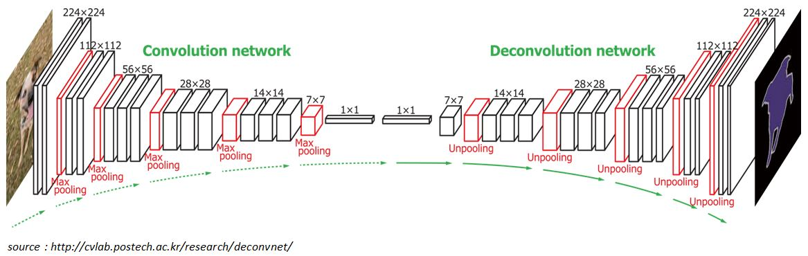 |
I experienced that good understanding of computational mechanism of convolution, pooling and deconvolution layers and their dependency on parameters such as kernel size, strides, padding together builds a solid ground in understanding CNNs better
The main objectives for rest of the post:
- To understand the relationship between input shape, kernel shape, zero padding, strides and output shape in convolution, pooling and deconvolution layers
- To understand the relationship between convolution layers and deconvolution layers
The main building blocks of CNN are Discrete Convolution and Pooling.
Affine Transformation and Discrete Convolution
Affine Transformation: A vector is given as an input and is multiplied with a matrix to produce an output. This is the transformation which is most often used in Neural networks. This is applicable to any type of input be it an image, a sound clip: whatever their dimensionality, the representation can always be flattened into a vector before transformation
- If you take MNIST digit recognition as an example, the
2-D input is flattened to a 1-D vector of size and fed as an input to
the typical fully connected neural network as shown in Figure 1.2
Figure 1.2: Multi-layer perceptron 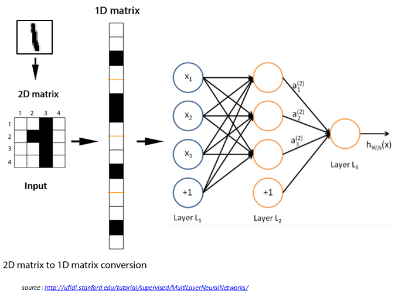 - But we notice images, sound clips have intrinsic structure. They share following properties
- They are stored as multi-dimensional array
- They feature one or more axes for which ordering matters (e.g., width and height axes of an image, time axis for a sound clip)
- One axis, called the channel axis is used to access different views of the data (e.g., red, green, and blue channels of a color image, or left and right channels of a stereo audio track)
- These properties are not exploited when Affine transformation is applied. All the axes are treated in the same way and topological information is not taken into consideration
- In computer vision tasks, taking the advantage of implicit structure of the input data can be very handy
- If you take MNIST digit recognition as an example, the
2-D input is flattened to a 1-D vector of size and fed as an input to
the typical fully connected neural network as shown in Figure 1.2
Discrete Convolution: It is a linear transformation which respects the ordering of the input data that we discussed above
- Convolution operation is sparse in CNN, i.e., only a few input units contribute to a given output unit (Figure 1.3 (a))
- It reuses the parameters i.e., same weights are applied to
multiple locations (Figure 1.3 (b))
Figure 1.3: (a) Local connectivity (b) Shared weights 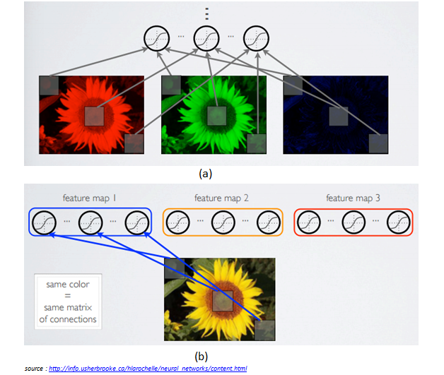
Discrete Convolution in detail
Figure 1.4 shows an example of a discrete convolution. The light blue grid is called the input feature map and the shaded area is the kernel (kernel values are at right bottom of each cell in shaded area)
Figure 1.4: Computing the output values of a discrete convolution 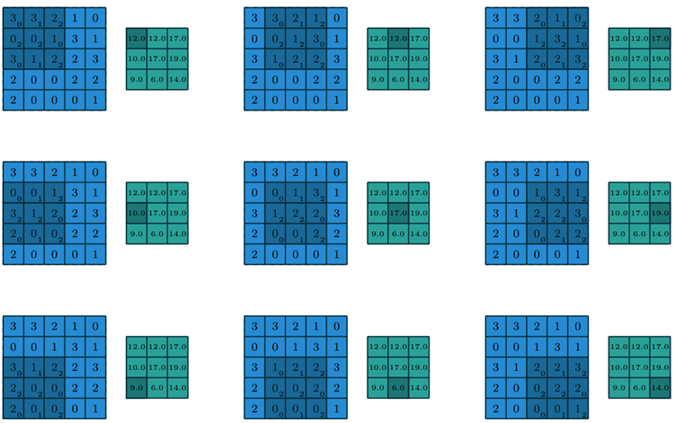 At each location, the product between the each element of the kernel and the input elements which overlaps is computed and results are summed up to obtain the output in the current location. The green grid in the figure illustrates this, shaded area in the green grid indicates output at that current location
The convolution operation shown in the Figure 1.4 is an instance of 2-D convolution, but this can be generalized to N-D convolution. For instance, in a 3-D convolution, the kernel would be a cuboid and would slide across the height, width and the depth of the input.
In CNN, the collection of kernels defining a discrete convolution has a shape corresponding to some permutation of (\(n, m, k_j\)), where $$ n \equiv number\ of\ output\ feature\ maps$$ $$ m \equiv number\ of\ input\ feature\ maps$$ $$ k_j \equiv kernel\ size\ along\ axis\ j \ (\ width \ or \ height \ axis\ )$$
The following properties affect the output size \(o_j\) of a convolution layer along the axis \(j\) $$ i_j : input\ size\ along\ axis\ j$$ $$ k_j : kernel\ size\ along\ axis\ j$$ $$ s_j : stride\ along\ axis\ j$$ $$ p_j : zero\ padding\ along\ axis\ j$$
For instance Figure 1.5 shows a \(3*3\) kernel applied to \(5*5\) input padded with \(1*1\) border of zeros using \(2*2\) strides
Figure 1.5: Computing the output values of a discrete convolution for \(N=2\) \(i_1 = i_2 = 5\), \(k_1 = k_2 = 3\) , \(s_1 = s_2 = 2\), \(p_1 = p_2 = 1\) 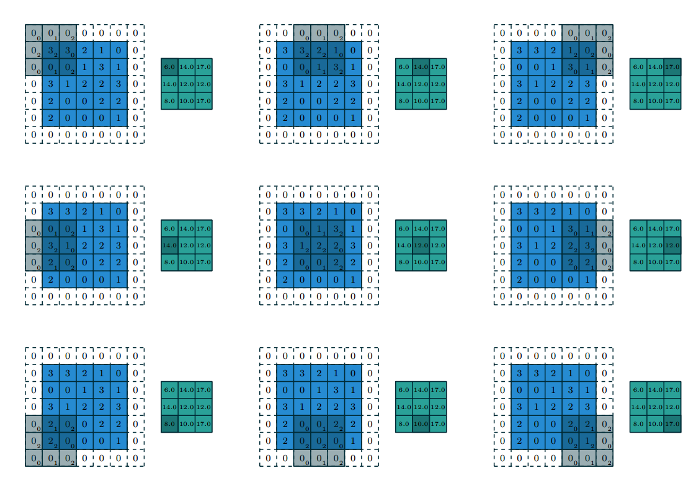 The strides constitute a form of subsampling. Strides can be viewed as much of the output is retained. For instance, moving the kernel by hops of two is equivalent to moving the kernel by hops of one, but retain only odd output elements (Figure 1.6)
Figure 1.6: An alternative way of viewing strides. Instead of translating the \(3*3\) kernel by increments of \(s=2\) (left), the kernel is translated by increments of \(1\) and only odd numbered output elements are retained 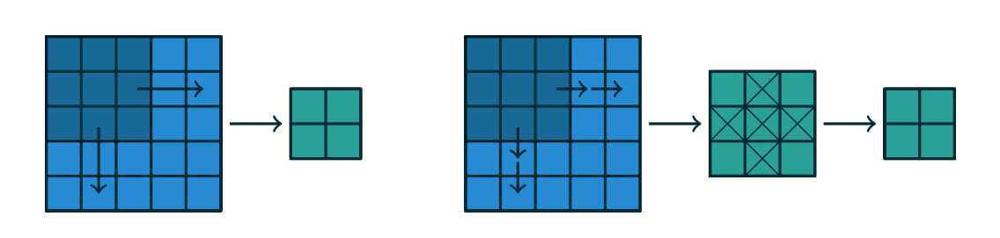
Convolutional Arithmetic
The analysis of relationship between convolutional layer properties is eased by the fact that they don't interact across axes, i.e., the choice of kernel size, stride and zero padding along the axis \(j\) only affects the output size along the axis \(j\)
The following simplified settings are used to analyse the convolution layer properties
- \(2\)-\(D\) discrete convolutions (\(N = 2\))
- square inputs (\(i_1 = i_2 = i\))
- square kernel size (\(k_1 = k_2 = k\))
- same strides along both axes (\(s_1 = s_2 = s\))
- same zero padding along both axes (\(p_1 = p_2 = p\))
No Zero Padding, Unit Strides
The simplest case to analyse is when the kernel just slides across every position of the input (i.e., \(s = 1\) and \(p = 0\))
| 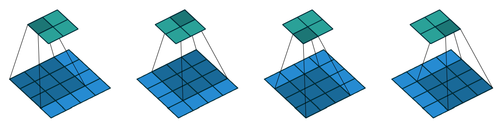 |
Lets define the output size resulting from this setting
- The output size is the number of possible placements of the kernel on the input
- Lets consider the width axis: the kernel starts on the leftmost part of the input feature map and slides by steps of one until it touches the right side of the input
- The size of the output will be equal to number of steps made, plus one
Relationship-1: For any \(i\), \(k\), and for \(s=1\) and \(p=0\),
$$o = (i-k)+1$$
- Figure 1.7 provides an example for \(i=4\), \(k = 3\), \(s=1\), therefore output size \(o = (4-3) + 1 = 2\) along each axis
Zero Padding, Unit Strides
Lets consider zero padding only restricting stride \(s = 1\). The effect of zero padding increases the size of the input from \(i\) to \(i+2p\)
| 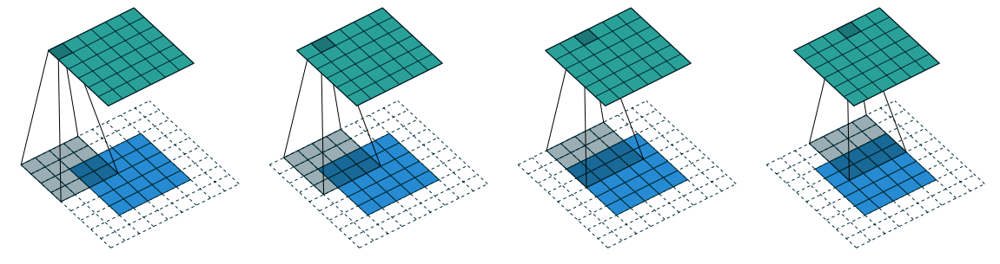 |
Relationship-2: For any \(i\), \(k\), \(p\) and for \(s=1\), $$o = (i-k)+ 2p + 1$$
- Figure 1.8 provides an example for \(i = 5\), \(k = 4\) and \(p = 2\), therefore output size \(o = (5-4) + 2*2 + 1 = 6\).
Half padding
Some times we require the output size of convolution to be same as input size (i.e., \(o=i\)). In order for \(o=i\), we use \(p = \lfloor \dfrac{k}{2} \rfloor\)
| 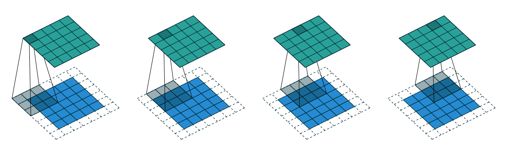 |
Relationship-3: For any \(i\), and for odd \(k\) (\(k = 2n + 1\), \(n \in N\)), \(s=1\), and \(p = \lfloor \dfrac{k}{2} \rfloor = n\) $$o = (i+2\lfloor \dfrac{k}{2} \rfloor)-(k - 1)$$ $$o = (i + 2n - 2n)$$ $$o = i$$
- Figure 1.9 provides an example for \(i = 5\), \(k = 3\) hence \(p = 2\), therefore output size \(o = (5+2*\lfloor \dfrac{3}{2} \rfloor) - (3 - 1) = 5 + 2 * 1 - 2 = 5\).
Full padding
Some times we require the output size of convolution to be of larger size than as input. But, convolution always decreases the size of the output if there is no extra padding to the input, so we can do some extra zero padding to the input.
| 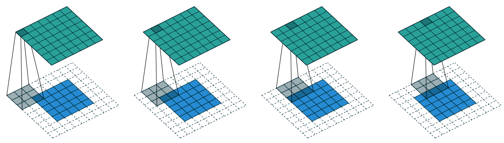 |
Relationship-4: For any \(i\), and \(k\), \(s=1\), and \(p = k - 1\) $$o = (i + 2(k - 1) - (k - 1)$$ $$o = (i + (k - 1)$$
- Figure 1.10 provides an example for \(i = 5\), \(k = 3\) hence \(p = 2\), therefore output size \(o = 5 + 3 - 1 = 7\).
No zero padding, non-unit strides
All relationships which we saw till now are unit-strided convolutions. In order to understand the effect of non-unit strides, lets ignore padding for now.
| 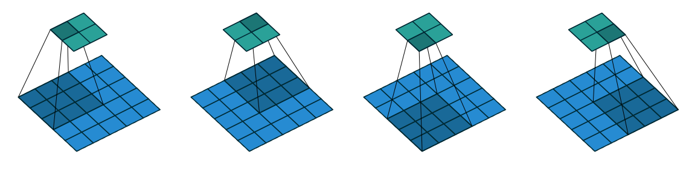 |
- As we discussed before, output size can be defined in terms of the number of possible placements of the kernel on the input. If you consider only width axis, the size of the output is equal to the number of steps made, plus one, accounting for the initial position of the kernel. The same logic applies for height axis.
Relationship-5: For any \(i\), \(k\), \(s\), and for \(p = 0\) $$o = \lfloor \dfrac{i - k}{s} \rfloor + 1$$
Figure 1.11 provides an example for \(i = 5\), \(k = 3\), \(p = 0\) and \(s = 2\), therefore output size \(o = \lfloor \dfrac{5 - 3}{2} \rfloor + 1 = 2\).
NOTE : The floor function in relationship-5 accounts for the fact that sometimes input size is such that kernel would not be able to reach all the input units.
Figure 1.12 illustrates this
Figure 1.12 Arbitrary padding and Strides 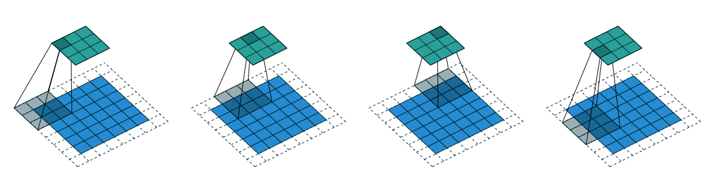
Zero padding, non-unit strides
This is the more general case, convolving over a zero padded input using a non-unit strides. We can derive by applying relationship-5 on effective input size of \(i + 2p\)
Relationship-6: For any \(i\), \(k\), \(s\), and \(p\) $$o = \lfloor \dfrac{i + 2p - k}{s} \rfloor + 1$$
| 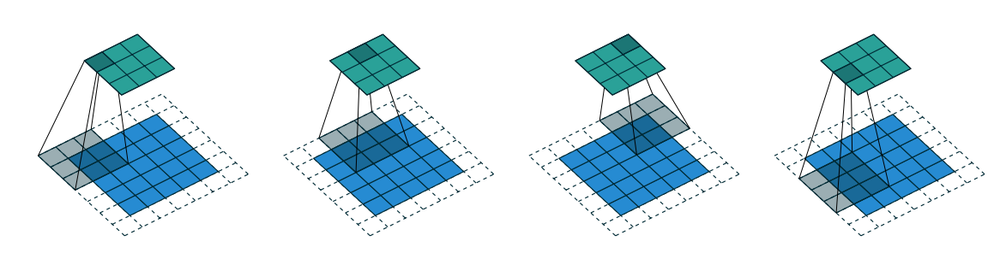 |
- Figure 1.13 provides an example for \(i = 5\), \(k = 3\), \(s = 2\) and \(p = 1\), therefore output size \(o = \lfloor \dfrac{5 + 2*1 - 3}{2} \rfloor + 1 = 5\).
- Figure 1.12 provides an example for \(i = 6\), \(k = 3\), \(s = 2\) and \(p = 1\), therefore output size \(o = \lfloor \dfrac{6 + 2*1 - 3}{2} \rfloor + 1 = 5\).
Observe that even though both has different size inputs \(i = 5\) and \(i = 6\), output size after convolution is same \(o = 5\) for both. As discussed before, this is due to the fact that kernel is not able to reach all the input units.
continued in part 2